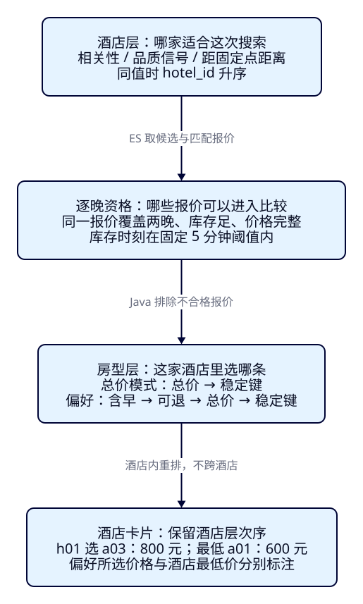
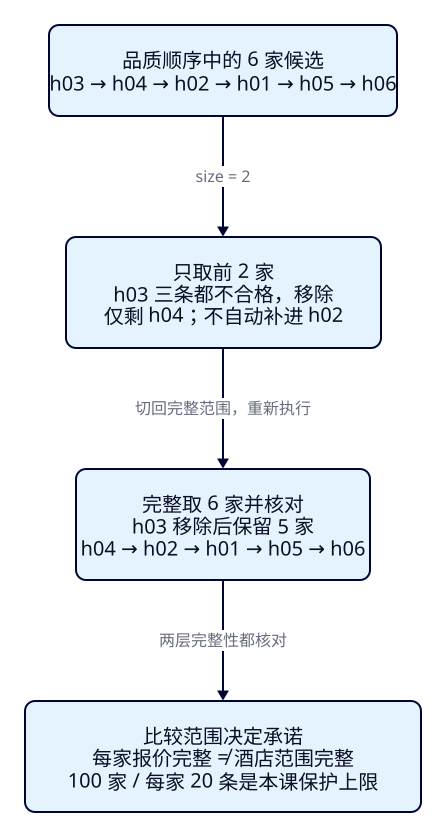

酒店与房型
怎样各自排序？
F26已经能给酒店算出合格报价最低总价，但游客未必想先找全城最便宜的酒店。他可能先看“西湖附近、品质可靠”的酒店，再挑这家酒店里含早、可退的房型。把所有报价按价格排一次，酒店选择和房型选择就被混成了一个问题。本课把两层次序写成独立规则，并检查旧库存、缺价与候选截断怎样影响最终列表。
学完能用输出证明什么
- 用同一组候选复现相关性、品质、距离三种酒店次序，说明同值与缺信号的处理。
- 保持酒店次序，只改变酒店内的房型次序；区分所选总价、最低总价，以及偏好与硬条件。
- 逐晚排除缺价、旧库存等报价，比较完整候选与前2家，并独立完成“运河、必须含早可退”的新需求。
本课目录
图解跳转：01 · 两层排序 · 02 · 排序的覆盖范围
1. 酒店列表和酒店内房型，回答两个问题
Elasticsearch在这里是检索与排序引擎：根据酒店文字和硬条件找到候选，再按指定信号排酒店。Java搜索服务接收游客的选择，用固定逐晚表确认报价资格、计算入住总价，并在每家酒店内部排房型。实时供价、支付和扣库存由业务系统负责，本课没有这些能力。
“酒店相关性”比较酒店是否贴合关键词，“品质优先”比较同一口径的品质信号，“距离优先”比较距指定点的远近。它们是三种明确的排序模式，本课没有发明一个把评分、米数和金额相加的总分。选择品质或距离仍须满足关键词和硬条件；track_scores只是保留文本分数便于观察，不会让_score夺回第一排序键。
房型则比较同一家酒店里哪些报价更合适。h01有600元的不含早不可退报价，也有800元的含早可退报价。游客可以接受贵一点来换早餐和退改，但这个选择不应把整家酒店移到另一家酒店前面。这种“先排酒店、各酒店内部再排房型”的结构，就是本课的分层排序。

2. 用8家酒店、19条报价把规则固定下来
本课改用“一家酒店一份根文档，offers为nested报价摘要”：酒店文字只存一份，酒店排序单位直接是酒店，hits.total也数酒店。F26的一条文档是一条报价，不能把旧课计数直接搬过来。nested继续保证床型、人数、币种和政策来自同一报价；更新一个报价摘要仍涉及根文档的重写，这不是为高频供价选出的生产模型。
固定逐晚表快照f27-20261027-v1，杭州、双床、CNY、一间两成人，上海当地日期[2026-11-01,03)，只读1日和2日。金额为每间每晚的整数分，两晚总价是同一offer逐晚相加；不含税费，不换汇。每条报价的room_id、rate_plan_id和币种不可跨晚拼接。默认早餐与可退都是软偏好，ES只强制酒店open、报价active、容量、床型、币种和摘要窗口/库存条件。
name_search和description明确用whitespace分析器；固定输入已用空格分好词，如“西湖 湖畔 酒店”。这是为了隔离本课排序问题，不能据此声称任意中文都已分词正确。name_search是检索字段，hotel_name是展示名称。quality_signal为虚构的0–1000整数品质信号，默认越大越靠前；它不是星级、实时点评或F20的自动计算结果。
窄屏提示：表格、代码和图可在各自框内横向滚动；图另有展开入口。以下为固定输入和核对目标，实际响应保存在本课两轮运行记录。
| 酒店 | 关键词位置 / 品质 | 距固定中心点 | 报价与两晚总价（CNY分） |
|---|---|---|---|
| h01 湖畔 | 名称 / 930 | 约1112米 | a01不含早不可退60000；a02含早不可退70000；a03/a04含早可退各80000；a05缺2日晚价格 |
| h02 城北 | 名称 / 950 | 与h01同坐标 | b01不含早可退50000；b02含早可退90000 |
| h03 山居 | 名称 / 990 | 约111米 | c01库存旧；c02缺2日晚；c03第二晚库存0，三条均不合格 |
| h04 园景 | 仅描述 / 970 | 0米 | d01不含早不可退40000；d02含早可退100000 |
| h05 江湾 | 名称 / 930 | 约2224米 | e01含早可退80000；e02大床不满足双床条件 |
| h06 远郊 | 名称 / 品质缺失 | 坐标缺失 | f01不含早可退70000 |
| h07 桥畔 / h08 古街 | 名称仅含运河 / 均940 | 同坐标 | 留给独立需求；不属于“西湖”候选，h08另有USD报价 |
固定中心点为纬度30.25、经度120.15，距离以米返回，指点到点的球面距离，不是步行或驾车路线。品质缺失显式放末尾；距离缺坐标也放末尾，响应排序值可能是字符串Infinity，不能当0米显示。缺品质/坐标仍可参加其他模式，缺价格的报价则不能参加房价比较。
3. f27-c01：同一候选，分别按相关性、品质、距离排序
使用独立端口19227、索引tut-f27-hotels与es-framework-f27容器组；ES9.4.0/Lucene10.4.0，单节点、一主零副本、无插件，禁用认证且只绑定回环地址。dynamic=strict，整数禁coerce，refresh_interval=-1，写入后显式refresh。此处只用于本机实验，安全连接留到F35。
cd projects/travel-search
docker compose -f infra/f27/compose.yaml up -d
bash infra/f27/wait.sh
export ES_URL=http://127.0.0.1:19227
export APP_URL=http://127.0.0.1:18081
export F27_OUT=/tmp/f27-reader-round1
bash labs/f27/01-prepare.sh
bash labs/f27/02-hotels.sh准备包括版本/插件、建索引、限定索引green、8项create Bulk、refresh、根文档计数、完整mapping/settings与全部_source核对。根文档8份中含19条nested摘要，不将底层嵌套文档数量当酒店数。重复创建400；重复create Bulk虽是HTTP200，8项仍可能全部409，必须检查items。生成器、完整NDJSON和mapping均保留。
展开完整settings/mapping
{
"settings": {
"number_of_shards": 1,
"number_of_replicas": 0,
"refresh_interval": "-1"
},
"mappings": {
"dynamic": "strict",
"properties": {
"hotel_id": {
"type": "keyword"
},
"hotel_name": {
"type": "keyword"
},
"city_code": {
"type": "keyword"
},
"hotel_status": {
"type": "keyword"
},
"snapshot_id": {
"type": "keyword"
},
"name_search": {
"type": "text",
"analyzer": "whitespace"
},
"description": {
"type": "text",
"analyzer": "whitespace"
},
"quality_signal": {
"type": "integer",
"coerce": false
},
"location": {
"type": "geo_point"
},
"offers": {
"type": "nested",
"dynamic": "strict",
"properties": {
"offer_id": {
"type": "keyword"
},
"room_id": {
"type": "keyword"
},
"rate_plan_id": {
"type": "keyword"
},
"offer_status": {
"type": "keyword"
},
"bed_type": {
"type": "keyword"
},
"meal": {
"type": "keyword"
},
"cancellation": {
"type": "keyword"
},
"currency": {
"type": "keyword"
},
"capacity": {
"type": "integer",
"coerce": false
},
"max_available_rooms": {
"type": "integer",
"coerce": false
},
"window_start": {
"type": "date",
"format": "strict_date"
},
"window_end_exclusive": {
"type": "date",
"format": "strict_date"
}
}
}
}
}
}先预测h03：品质最高、距离近，会不会成为最终首选？此时ES只能确认摘要条件，不知道每个住宿晚的价格与库存时刻。三次REST搜索都命中6家酒店，匹配14条报价摘要。酒店候选顺序如下；逐晚检查后的最终次序在后文比较。
| 酒店模式 | ES实际候选次序 | 同值与缺失 |
|---|---|---|
| 相关性 | h01、h02、h03、h05、h06、h04 | 前5家名称匹配，同分按hotel_id；h04仅描述匹配 |
| 品质 | h03、h04、h02、h01、h05、h06 | h01/h05同为930按hotel_id；h06缺值末尾 |
| 距离 | h04、h03、h01、h02、h05、h06 | h01/h02同坐标按hotel_id；h06缺坐标末尾 |
4. 让查询、候选单位与稳定键一致
下面是完整相关性请求，直接POST到/tut-f27-hotels/_search。根层multi_match用name_search^5与description的best_fields；nested放filter中，score_mode=none也显式表达“不把报价分数合成酒店分数”。两个布尔硬条件默认false，所以报价查询里还没有早餐与可退。inner_hits取本nested条件匹配的报价，不是整个offers数组；按offer_id取数只是稳定收集，并没有按入住总价排序。
{
"size": 100,
"track_total_hits": true,
"track_scores": true,
"query": {
"bool": {
"must": [
{
"multi_match": {
"query": "西湖",
"fields": [
"name_search^5",
"description"
],
"type": "best_fields",
"operator": "and"
}
}
],
"filter": [
{
"term": {
"city_code": {
"value": "HZ"
}
}
},
{
"term": {
"hotel_status": {
"value": "open"
}
}
},
{
"nested": {
"path": "offers",
"score_mode": "none",
"query": {
"bool": {
"filter": [
{
"term": {
"offers.offer_status": {
"value": "active"
}
}
},
{
"term": {
"offers.bed_type": {
"value": "twin"
}
}
},
{
"term": {
"offers.currency": {
"value": "CNY"
}
}
},
{
"range": {
"offers.capacity": {
"gte": 2.0
}
}
},
{
"range": {
"offers.window_start": {
"lte": "2026-11-01"
}
}
},
{
"range": {
"offers.window_end_exclusive": {
"gte": "2026-11-03"
}
}
},
{
"range": {
"offers.max_available_rooms": {
"gte": 1.0
}
}
}
]
}
},
"inner_hits": {
"name": "eligible_offers",
"size": 20,
"sort": [
{
"offers.offer_id": {
"order": "asc"
}
}
]
}
}
}
]
}
},
"sort": [
{
"_score": {
"order": "desc"
}
},
{
"hotel_id": {
"order": "asc"
}
}
]
}酒店sort先比较主键，同值才比较hotel_id。酒店ID为单值keyword，报价稳定键也来自业务字段，不依赖内部文档顺序。品质和距离模式只替换sort，其余候选query保持一致；完整可执行文件分别为quality-price.json与distance-price.json。
"sort": [
{
"quality_signal": {
"order": "desc",
"missing": "_last"
}
},
{
"hotel_id": {
"order": "asc"
}
}
] "sort": [
{
"_geo_distance": {
"location": [
{
"lat": 30.25,
"lon": 120.15
}
],
"order": "asc",
"unit": "m",
"distance_type": "arc",
"mode": "min",
"ignore_unmapped": false
}
},
{
"hotel_id": {
"order": "asc"
}
}
]本次名称匹配分数约2.462，描述匹配约1.792，只用于理解相对次序，验收不硬编码浮点值。初次探索名称权重3时，稀有的描述匹配反而更高；改为5才在本固定语料得到表中次序。权重不保证在其他语料仍压过描述，不据此宣称搜索质量提高。品质/距离模式保留_score也不按它排同值，因为本课稳定第二键明确是hotel_id。
5. f27-c02：先核对总价，再在酒店内部表达偏好
ES摘要的两端日期、最大库存只是必要条件。Java按同一offer核对每晚存在、库存≥1、价格非空、入住日min_stay_arrival≤2；只读取入住日的最短晚数。然后逐晚相加。a05第一晚100元、第二晚缺价，即使摘要完整也必须拒绝，不能拿0补上去抢最低价。
本课新增固定时效契约：参考时刻2026-10-27 08:00（Asia/Shanghai），每个住宿晚的inventory_as_of与它相差须在[0,300]秒内，边界300秒允许，未来时刻拒绝。正常记录为07:58；c01为07:40，超过5分钟。这里的5分钟是人为教学规则，参考时刻不是电脑当前时间，也不是ES保证的延迟。旧记录作为已知业务坏例被拒绝；ES投影与整份固定表对不上则是资料错误，整个请求返回502。
# 新终端，从仓库根目录；先将JAVA_HOME和PATH配置为JDK25
cd projects/travel-search/backend
./mvnw -B -ntp clean package
ES_URL=http://127.0.0.1:19227 APP_PORT=18081 java -jar target/travel-search-0.7.0.jar
# 打开 http://127.0.0.1:18081/f27.html# 回到 projects/travel-search 终端，Java已启动
bash labs/f27/03-rooms.sh
curl --fail-with-body -sS -X POST "$APP_URL/api/hotel-ranking/inspect" \
-H 'Content-Type: application/json' --data-binary @search/f27/relevance-preferred-input.jsonroomSort=total按“入住总价→room_id→rate_plan_id→offer_id”升序；preferred按“含早优先→可退优先→同一总价与稳定键”依次比较。它是逐项优先级，不是加权总分：本规则宁愿选更贵的含早报价，也不会因价差大而反过来。早餐优先于可退也是本课明确的产品选择，并非通用最佳策略。
| 只改房型模式 | h01完整合格次序 | 所选 / 最低总价 | 最终酒店次序 |
|---|---|---|---|
| total | a01、a02、a03、a04 | a01=60000 / 60000分 | h01、h02、h05、h06、h04 |
| preferred | a03、a04、a02、a01 | a03=80000 / 60000分 | 相同，房型重排不改酒店次序 |
| 必须含早且可退 | a03、a04 | a03=80000 / 80000分 | h01、h02、h05、h04；h06不再符合 |
a03/a04偏好和总价完全相同，由r13先于r14决定次序。软偏好保留a01作更便宜的选择；硬条件则在同一个nested查询里追加meal=breakfast与cancellation=flexible，候选报价和酒店集合都会变。不能把“必须含早”只写成一个加分项。两个硬条件也能单独启用，附加验收分别核对过。
必须含早且可退的完整DSL与输入
{
"hotelSort": "relevance",
"roomSort": "preferred",
"requireBreakfast": true,
"requireFlexible": true,
"scope": "all",
"q": "西湖"
}{
"size": 100,
"track_total_hits": true,
"track_scores": true,
"query": {
"bool": {
"must": [
{
"multi_match": {
"query": "西湖",
"fields": [
"name_search^5",
"description"
],
"type": "best_fields",
"operator": "and"
}
}
],
"filter": [
{
"term": {
"city_code": {
"value": "HZ"
}
}
},
{
"term": {
"hotel_status": {
"value": "open"
}
}
},
{
"nested": {
"path": "offers",
"score_mode": "none",
"query": {
"bool": {
"filter": [
{
"term": {
"offers.offer_status": {
"value": "active"
}
}
},
{
"term": {
"offers.bed_type": {
"value": "twin"
}
}
},
{
"term": {
"offers.currency": {
"value": "CNY"
}
}
},
{
"term": {
"offers.meal": {
"value": "breakfast"
}
}
},
{
"term": {
"offers.cancellation": {
"value": "flexible"
}
}
},
{
"range": {
"offers.capacity": {
"gte": 2.0
}
}
},
{
"range": {
"offers.window_start": {
"lte": "2026-11-01"
}
}
},
{
"range": {
"offers.window_end_exclusive": {
"gte": "2026-11-03"
}
}
},
{
"range": {
"offers.max_available_rooms": {
"gte": 1.0
}
}
}
]
}
},
"inner_hits": {
"name": "eligible_offers",
"size": 20,
"sort": [
{
"offers.offer_id": {
"order": "asc"
}
}
]
}
}
}
]
}
},
"sort": [
{
"_score": {
"order": "desc"
}
},
{
"hotel_id": {
"order": "asc"
}
}
]
}默认完整核对14条报价，合格10条；a05缺价、c01旧库存、c02缺晚、c03售罄，h03因没有合格报价而整家消失。必须含早可退后，ES为5家/9条报价，逐晚合格5条/4家。卡片同时写所选房型总价和该酒店合格最低总价；不能把a03的800元说成“最低”，也不能把600元贴到含早可退的选择上。
6. f27-c03：酒店再合适，也不能跳过资格与范围
完整核对保持ES给出的酒店顺序，只删除全部报价不合格的酒店：相关性为h01、h02、h05、h06、h04；品质为h04、h02、h01、h05、h06；距离为h04、h01、h02、h05、h06。酒店层未按所选房价或最低价重新排序，所以相关性模式中600元的h01可以排在500元的h02前面。

bash labs/f27/04-boundary.sh
curl --fail-with-body -sS -X POST "$APP_URL/api/hotel-ranking/inspect" \
-H 'Content-Type: application/json' --data-binary @search/f27/top-quality-input.jsonscope=top2只是把品质查询size改为2，取h03/h04；h03的3条报价全部被拒绝，最终只剩h04。scope=all完整取6家，移除h03后还有h02等酒店。前2家内部核对再准确，也不会自动生成范围外的h02，不能把局部结果写成“全局前2家”或“只有1家符合”。
完整模式上限100家、每家inner_hits上限20条。Java分别检查根total与实际返回数、每组inner total与实际返回数，拒绝截断后的精确输出。上限是本课保护，不能靠把size写大就宣称解决任意规模搜索。此次真实注入101份测试酒店后，命中107家而只取100，完整模式返回502；逐个点名移除并重建固定语料后恢复。每家超过20条的拒绝分支已有代码，当前固定表最大5条，未单独注入该溢出故障。
7. Java把两层规则和失败边界写在哪里
工程继续使用Boot4.0.8、Temurin25.0.4.1+1、官方Java与Rest5 Client9.4.8，ES服务端仍是9.4.0；客户端补丁号不替代服务端版本。ES镜像内bundled JVM与应用JDK分开记录。新增接口/api/hotel-ranking/inspect与本机/f27.html，复用现有客户端生命周期及全局错误映射。
首先把两组游客选择映射为查询。酒店排序与房型排序为不同字段；只有两个require标记进入ES硬过滤，roomSort从不改候选DSL。报价nested的inner_hits仅稳定取回匹配摘要，再交给Java算入住总价。下面为完整请求构造方法。
public SearchRequest request(HotelRankingInput input) {
var offer=new BoolQuery.Builder();
for(String[] pair:new String[][]{{"offer_status","active"},{"bed_type","twin"},{"currency","CNY"}})
offer.filter(q->q.term(t->t.field("offers."+pair[0]).value(pair[1])));
if(input.requireBreakfast())offer.filter(q->q.term(t->t.field("offers.meal").value("breakfast")));
if(input.requireFlexible())offer.filter(q->q.term(t->t.field("offers.cancellation").value("flexible")));
offer.filter(q->q.range(r->r.number(n->n.field("offers.capacity").gte(2.0))));
offer.filter(q->q.range(r->r.date(d->d.field("offers.window_start").lte("2026-11-01"))));
offer.filter(q->q.range(r->r.date(d->d.field("offers.window_end_exclusive").gte("2026-11-03"))));
offer.filter(q->q.range(r->r.number(n->n.field("offers.max_available_rooms").gte(1.0))));
var hotel=new BoolQuery.Builder()
.must(q->q.multiMatch(m->m.query(input.q()).fields("name_search^5","description")
.type(TextQueryType.BestFields).operator(Operator.And)))
.filter(q->q.term(t->t.field("city_code").value("HZ")))
.filter(q->q.term(t->t.field("hotel_status").value("open")))
.filter(q->q.nested(n->n.path("offers").scoreMode(ChildScoreMode.None)
.query(v->v.bool(offer.build())).innerHits(i->i.name("eligible_offers").size(20)
.sort(s->s.field(f->f.field("offers.offer_id").order(SortOrder.Asc))))));
var r=new SearchRequest.Builder().index("tut-f27-hotels").size(input.scope().equals("all")?100:2)
.trackTotalHits(t->t.enabled(true)).trackScores(true).query(q->q.bool(hotel.build()));
switch(input.hotelSort()) {
case "relevance" -> r.sort(s->s.score(v->v.order(SortOrder.Desc)));
case "quality" -> r.sort(s->s.field(f->f.field("quality_signal").order(SortOrder.Desc).missing(FieldValue.of("_last"))));
case "distance" -> r.sort(s->s.geoDistance(g->g.field("location")
.location(l->l.latlon(p->p.lat(30.25).lon(120.15))).order(SortOrder.Asc)
.unit(DistanceUnit.Meters).distanceType(GeoDistanceType.Arc).mode(SortMode.Min).ignoreUnmapped(false)));
default -> throw new IllegalArgumentException("Unsupported hotel sort");
}
return r.sort(s->s.field(f->f.field("hotel_id").order(SortOrder.Asc))).build();
}逐晚检查先决定资格，只有ACCEPTED才有totalMinor。Math.addExact保留整数相加的溢出检查；本固定表金额很小，不把它当任意供应商金额的自动治理。时效来自每个住宿晚记录，不能只检查报价的一次更新时间。接着用Comparator表达两种房型优先级，所有合格房型都参与比较。
private Decision decide(String hotel,JsonNode s) {
String id=s.path("offer_id").asString();JsonNode row=offers.get(id);
require(row!=null && row.path("hotel_id").asString().equals(hotel) && row.path("summary").equals(s));
JsonNode nights=row.path("nights");Map<String,JsonNode> dates=new HashMap<>();
for(JsonNode n:nights)dates.put(n.path("date").asString(),n);
String reason="ACCEPTED";long total=0;
JsonNode arrival=dates.get("2026-11-01");
if(arrival!=null && arrival.path("min_stay_arrival").asInt()>2)reason="MIN_STAY";
else for(LocalDate day=LocalDate.of(2026,11,1);day.isBefore(LocalDate.of(2026,11,3));day=day.plusDays(1)) {
JsonNode n=dates.get(day.toString());
if(n==null)reason="MISSING_NIGHT";
else {
Duration age=Duration.between(Instant.parse(n.path("inventory_as_of").asString()),REFERENCE);
if(age.isNegative())reason="FUTURE_INVENTORY";
else if(age.compareTo(Duration.ofSeconds(300))>0)reason="STALE_INVENTORY";
else if(n.path("available_rooms").asInt()<1)reason="SOLD_OUT";
else if(!n.hasNonNull("price_minor"))reason="MISSING_PRICE";
}
if(!reason.equals("ACCEPTED"))break;
total=Math.addExact(total,n.path("price_minor").asLong());
}
return new Decision(hotel,id,s.path("room_id").asString(),s.path("rate_plan_id").asString(),
s.path("meal").asString(),s.path("cancellation").asString(),reason,reason.equals("ACCEPTED")?total:null,nights);
}
private Comparator<Decision> roomOrder(HotelRankingInput input) {
Comparator<Decision> total=Comparator.comparingLong((Decision d)->d.totalMinor())
.thenComparing(Decision::roomId).thenComparing(Decision::ratePlanId).thenComparing(Decision::offerId);
if(input.roomSort().equals("total"))return total;
return Comparator.comparingInt((Decision d)->d.meal().equals("breakfast")?0:1)
.thenComparingInt(d->d.cancellation().equals("flexible")?0:1).thenComparing(total);
}最后守住两层取数范围并投影卡片。完整模式若候选截断，或任何酒店匹配报价截断，都整体失败；根_source和固定表必须完全一致，未知报价也拒绝。正常业务拒绝则留在decisions中，没有合格报价的酒店被移除。result按ES顺序追加，没有按房价再排酒店。minimumTotalMinor独立算最小值，selectedTotalMinor来自当前房型排序第一条，二者不混用。
public Result inspect(HotelRankingInput input) throws IOException {
var request=request(input);var response=client.search(request,JsonData.class);
require(!response.timedOut() && response.shards().failed().longValue()==0 && response.hits().total()!=null
&& response.hits().total().relation().jsonValue().equals("eq"));
boolean complete=input.scope().equals("all");
if(complete)require(response.hits().total().value()==response.hits().hits().size());
JsonNode raw=tree(response);List<Hotel> result=new ArrayList<>();List<Decision> decisions=new ArrayList<>();
Set<String> seenHotels=new HashSet<>(),seenOffers=new HashSet<>();
for(JsonNode hit:raw.path("hits").path("hits")) {
String id=hit.path("_id").asString();JsonNode source=hit.get("_source");
require(seenHotels.add(id) && source!=null && source.equals(hotels.get(id)));
JsonNode inner=hit.path("inner_hits").path("eligible_offers").path("hits");
require(inner.path("total").path("relation").asString().equals("eq")
&& inner.path("total").path("value").asInt()==inner.path("hits").size()
&& inner.path("hits").size()>0);
List<Decision> accepted=new ArrayList<>();
for(JsonNode ih:inner.path("hits")) {
JsonNode s=ih.get("_source");
require(s!=null && seenOffers.add(s.path("offer_id").asString()));
Decision d=decide(id,s);decisions.add(d);
if(d.reason().equals("ACCEPTED"))accepted.add(d);
}
if(accepted.isEmpty())continue; // remove ineligible hotels; preserve ES hotel order
long minimum=accepted.stream().mapToLong(d->d.totalMinor()).min().orElseThrow();
accepted.sort(roomOrder(input));Decision selected=accepted.getFirst();
result.add(new Hotel(id,source.path("hotel_name").asString(),hit.get("sort"),
hit.hasNonNull("_score")?hit.get("_score").asDouble():null,
source.hasNonNull("quality_signal")?source.get("quality_signal").asLong():null,
minimum,selected.offerId(),selected.totalMinor(),List.copyOf(accepted)));
}
String boundary=complete
?"本固定快照全部ES候选酒店及各酒店匹配报价已完整核对；保持酒店排序，房型只在各酒店内部排序。"
:"仅ES排序前2家候选酒店；移除不合格酒店后不补位，不能声称完整或全局前2家。";
return new Result(input,SNAPSHOT,REFERENCE.toString(),boundary,complete,response.hits().total().value(),
seenHotels.size(),decisions.size(),(int)decisions.stream().filter(d->d.reason().equals("ACCEPTED")).count(),
List.copyOf(result),List.copyOf(decisions),tree(request),raw);
}require失败经既有ApiErrors映射为502 SEARCH_INCOMPLETE；ES拒绝为502 SEARCH_BACKEND_REJECTED，连接失败为503 SEARCH_UNAVAILABLE。超时/分片部分失败也有拒绝检查，但本轮未注入这两种故障。输入不合法为400，两个硬条件只接受JSON布尔值，数字5或字符串true不能被默默转换。
输入、Controller、固定表加载与完整文件
package dev.esweb.travel;
import jakarta.validation.constraints.NotNull;
import jakarta.validation.constraints.Pattern;
import tools.jackson.core.JsonParser;
import tools.jackson.core.JsonToken;
import tools.jackson.databind.DeserializationContext;
import tools.jackson.databind.ValueDeserializer;
import tools.jackson.databind.annotation.JsonDeserialize;
public record HotelRankingInput(
@NotNull @Pattern(regexp="西湖|运河") String q,
@NotNull @Pattern(regexp="relevance|quality|distance") String hotelSort,
@NotNull @Pattern(regexp="total|preferred") String roomSort,
@NotNull @JsonDeserialize(using=StrictBoolean.class) Boolean requireBreakfast,
@NotNull @JsonDeserialize(using=StrictBoolean.class) Boolean requireFlexible,
@NotNull @Pattern(regexp="all|top2") String scope) {
public static class StrictBoolean extends ValueDeserializer<Boolean> {
@Override public Boolean deserialize(JsonParser parser, DeserializationContext context) {
if(parser.currentToken()==JsonToken.VALUE_TRUE)return true;
if(parser.currentToken()==JsonToken.VALUE_FALSE)return false;
return context.reportInputMismatch(Boolean.class,"Expected a JSON boolean");
}
}
}package dev.esweb.travel;
import jakarta.validation.Valid;
import java.io.IOException;
import org.springframework.http.ResponseEntity;
import org.springframework.http.converter.HttpMessageNotReadableException;
import org.springframework.web.bind.MethodArgumentNotValidException;
import org.springframework.web.bind.annotation.*;
@RestController
public class HotelRankingController {
private final HotelRankingService service;
public HotelRankingController(HotelRankingService service) { this.service=service; }
@ExceptionHandler({MethodArgumentNotValidException.class, HttpMessageNotReadableException.class})
public ResponseEntity<ApiErrors.ErrorBody> invalid(Exception error) {
return ResponseEntity.badRequest().body(new ApiErrors.ErrorBody("INVALID_HOTEL_RANKING_INPUT",
"请检查关键词、酒店/房型排序、两个布尔硬条件和候选范围；本课日期/人数固定。"));
}
@PostMapping("/api/hotel-ranking/inspect")
public HotelRankingService.Result inspect(@Valid @RequestBody HotelRankingInput input) throws IOException {
return service.inspect(input);
}
}package dev.esweb.travel;
import co.elastic.clients.elasticsearch.ElasticsearchClient;
import co.elastic.clients.elasticsearch._types.*;
import co.elastic.clients.elasticsearch._types.query_dsl.*;
import co.elastic.clients.elasticsearch.core.SearchRequest;
import co.elastic.clients.json.*;
import java.io.IOException;
import java.time.*;
import java.util.*;
import org.springframework.core.io.ClassPathResource;
import org.springframework.stereotype.Service;
import tools.jackson.databind.JsonNode;
import tools.jackson.databind.json.JsonMapper;
@Service
public class HotelRankingService {
private static final String SNAPSHOT="f27-20261027-v1";
private static final Instant REFERENCE=Instant.parse("2026-10-27T00:00:00Z");
private final ElasticsearchClient client;
private final JsonMapper json;
private final Map<String,JsonNode> hotels=new HashMap<>(), offers=new HashMap<>();
public HotelRankingService(ElasticsearchClient client, JsonMapper json) throws IOException {
this.client=client;this.json=json;
try(var stream=new ClassPathResource("f27/stay-table.json").getInputStream()) {
JsonNode root=json.readTree(stream);
require(root.path("snapshot_id").asString().equals(SNAPSHOT)
&& Instant.parse(root.path("reference_time").asString()).equals(REFERENCE)
&& root.path("max_inventory_age_seconds").asInt()==300);
for(JsonNode h:root.path("hotels")) require(hotels.putIfAbsent(h.path("hotel_id").asString(),h)==null);
for(JsonNode o:root.path("offers")) {
String id=o.path("summary").path("offer_id").asString();
require(offers.putIfAbsent(id,o)==null && hotels.containsKey(o.path("hotel_id").asString()));
Set<String> dates=new HashSet<>();
for(JsonNode n:o.path("nights")) {
require(dates.add(LocalDate.parse(n.path("date").asString()).toString())
&& n.path("available_rooms").isIntegralNumber() && n.path("available_rooms").asInt()>=0
&& n.path("min_stay_arrival").isIntegralNumber() && n.path("min_stay_arrival").asInt()>=1
&& (!n.hasNonNull("price_minor") || (n.get("price_minor").isIntegralNumber() && n.get("price_minor").asLong()>=0)));
Instant.parse(n.path("inventory_as_of").asString());
}
}
}
}
private static void require(boolean ok) { if(!ok) throw new AttractionSearchService.IncompleteSearchException(); }
private JsonNode tree(JsonpSerializable v) { return json.readTree(JsonpUtils.toJsonString(v,client._jsonpMapper())); }
public record Decision(String hotelId,String offerId,String roomId,String ratePlanId,String meal,String cancellation,
String reason,Long totalMinor,JsonNode nights) {}
public record Hotel(String hotelId,String hotelName,JsonNode hotelSortValues,Double score,Long qualitySignal,
long minimumTotalMinor,String selectedOfferId,long selectedTotalMinor,List<Decision> rooms) {}
public record Result(HotelRankingInput conditions,String snapshotId,String referenceTime,String boundary,
boolean completeCandidateSet,long candidateHotelTotal,int inspectedHotelCount,int inspectedOfferCount,
int acceptedOfferCount,List<Hotel> hotels,List<Decision> decisions,JsonNode esRequest,JsonNode esResponse) {}完整Service · 错误映射 · 依赖与打包资源。本固定实验对ES根投影和本机表做严格相等校验，不是生产供价版本协商协议。
8. 操作本机观察窗，再独立完成一组需求
访问http://127.0.0.1:18081/f27.html，先以“西湖/相关性/总价/完整范围”查询；只把房型切成偏好，h01所选价从600变800元，酒店列表保持原次序。再切品质、距离，核对酒店次序与sort原始值。勾选“必须含早”和“必须可退”，观察h06消失；品质模式切前2家，只剩h04，再切完整范围才出现其余合格酒店。
观察窗由课程提供，不需要读者开发页面。每次条件变化会清空旧卡片、DSL与响应；错误也会清空旧证据。展开观察区，将实际输入、完整请求、hotelSortValues、rooms和decisions与卡片对照。真实链路为浏览器→本机Java→ES；ES端点与固定表在服务端，Pages只承载教程和静态图。
独立需求，先不要展开答案：把关键词改为“运河”，必须含早且可退，酒店按品质、房型按偏好，检查完整范围。先写出可能命中的酒店、被政策/币种排除的报价、所选总价，以及同值时如何决定次序。先用观察窗或自己构造Java输入，再与search/f27/independent-input.json对照，最后运行04-boundary核验。
独立需求的实际结果与解释
h07/h08品质均940，由hotel_id升序得h07、h08；两家分别只保留含早可退的g01/i01，均65000分。g02不可退，i02为USD，被同条报价的硬过滤排除。两家同价不跨酒店再比较房型ID。固定两轮均实际执行过这一组，与正文“西湖”样本分开核对。
9. 真实错误、点名清理与重做
3案例共27教学HTTP：f27-c01准备10与酒店REST3，f27-c02三组Java加REST重放6，f27-c03四组Java加REST重放8；Java内部另发7次搜索，不重复混算。附加脚本51条HTTP包括重复索引、Bulk条级冲突、10种非法输入、strict错误、根投影快照错配、107/100截断、两个单独硬条件及恢复。示例中的额外手工curl不计入27条。
# 以下仍在 projects/travel-search 目录，Java继续运行
python3 labs/f27/lab.py errors --out /tmp/f27-reader-errors
bash labs/f27/cleanup.sh --out /tmp/f27-reader-between
export F27_OUT=/tmp/f27-reader-round2
bash labs/f27/01-prepare.sh
bash labs/f27/02-hotels.sh
bash labs/f27/03-rooms.sh
bash labs/f27/04-boundary.sh
# 结束后关闭自己启动的Java；只删除本课索引
bash labs/f27/cleanup.sh --out /tmp/f27-reader-final
docker compose -f infra/f27/compose.yaml stop es错误脚本会短暂改写本课根文档并注入点名测试酒店，只针对tut-f27-hotels；恢复时清理、重建、重新导入固定语料，避免仅恢复_source却继续拿变化后的索引统计比较相关性。收据目录必须新建，不覆盖旧证据。cleanup删除点名索引并GET确认404，compose stop保留卷；若移除本课容器/网络，使用相同compose文件down，不加-v。
本机入口和两轮ES/Java记录保存真实请求，内容、图解、HTTP阅读与观察窗验收单列。未测性能、多节点、随机并发、实时供价与订单。实验假定固定快照不被并发修改，稳定键不等于跨更新的稳定视图；本课没有实现酒店分页。
官方依据与规则来源
官方sort说明解释多排序键优先级与距离；nested query与inner_hits说明父文档与匹配报价的范围。固定v9.4.0源码NestedQueryBuilder.doToQuery、GeoDistanceSortBuilder.build、FieldSortBuilder.build和SortBuilder.buildSort已与官方字节核对，见来源记录。品质信号、早餐先于可退、5分钟阈值、固定参考时刻和两晚金额均来自本课契约，不是ES默认业务规则。
10. 酒店阶段结束，搜索服务还要怎样持续运行
F23–F27已经能解释文档边界、同报价条件、多晚资格、价格范围和两层次序。现在仍只有一台实验节点：节点停止时搜索直接不可用，不能靠调排序解决。下一课F28才进入三节点拓扑、角色、发现与首次启动；本课只保留这一问题入口，不提前搭建集群。
能力检查：先判断，再展开
1. h01的a03是偏好第一名，可以写“最低800元”吗？
默认软偏好下不能；a01最低600元仍合格。应分别标“所选含早可退800元”和“酒店合格最低600元”。必须含早可退后，比较集合变了，此时最低才是800元。
2. 只把房型从总价改成preferred，哪些集合和次序应保持？
ES查询完全相同，酒店候选、逐晚资格和最终酒店次序相同；只改变酒店内报价顺序和selectedOfferId。h01变a03、a04、a02、a01。
3. h03品质990、约111米，为什么在最终列表消失？
c01库存超过固定5分钟、c02缺晚、c03售罄，没有任何合格报价。酒店信号不能补足资格；它只决定合格酒店间的先后。
4. 品质模式取得h03/h04后只剩h04，可以说全局前2家已经排好了吗？
不能。只核对了前2家候选，移除h03后没有补进h02。完整6家核对后前2家为h04、h02；本课top2明确标局部、不补位。
5. 距离相同或品质缺失时，本课如何处理？
主键相同按hotel_id升序，例如距离相同的h01在h02前。品质缺失显式_last；缺坐标距离为Infinity排末尾，不显示成0米。它们不是缺价：缺价不能参与房型总价排序。
6. “必须可退”能通过preferred自动表达吗？
不能。preferred只让可退优先，仍保留不可退报价；requireFlexible=true才在同一个nested查询里过滤。早餐与可退两个硬条件可以分别打开。
7. 把参考时刻改成电脑现在，300秒规则会怎样？
这份固定表可能全部过期，无法重现本课结果。本课时效判断固定在2026-10-27 08:00上海时间；300秒允许、未来拒绝。规则边界由代码定义，未来时刻与恰好300秒没有在本轮固定数据里逐项注入，不称已实测。
8. 独立需求的验收，应只看两家酒店卡片吗？
还须核对h07/h08顺序、g01/i01、两晚各65000分、g02不可退/i02币种排除、完整范围标识，以及Java请求与REST重放的完整一致性。
实际陷阱
把两层压成一个价格序列。房型便宜不自动决定酒店次序；保持酒店相关性、品质或距离的用户意图，再在酒店内排序。
拿偏好冒充硬条件。含早可退加分不会删除不含早不可退报价；同条报价必须满足的条件要进入nested过滤。
把缺价当0，或用高品质挽救旧库存。a05与c01在排序前被拒绝，酒店信号不能替代逐晚完整性与固定时效。
每家完整就声称全局完整。前2家即使每组都取全，仍会漏酒店；上限、查询视图、快照和实时可订均须分别说明。
速记
| 问题 | 本课规则与证据 |
|---|---|
| 酒店层 | 相关性/品质/距离三选一；hotel_id稳定第二键；本模型total数酒店 |
| 房型层 | 总价，或含早→可退→总价；再room_id/rate_plan_id/offer_id，保留酒店次序 |
| 硬条件 | require标记进入同条nested过滤；软偏好不缩集合 |
| 金额 | [入住,离店)同offer逐晚整数分；所选价与最低价分别计算、标注 |
| 资格 | a05缺价、c01旧库存、c02缺晚、c03售罄；默认14候选报价→10合格、6酒店→5家 |
| 范围 | 品质top2仅剩h04；完整模式才保留h04/h02/h01/h05/h06，100家/20条上限检查 |
| 独立需求 | 运河、必须含早可退：h07/g01、h08/i01，两晚各65000分 |
先确认资格与完整范围，再让酒店和房型各按自己的规则排序。